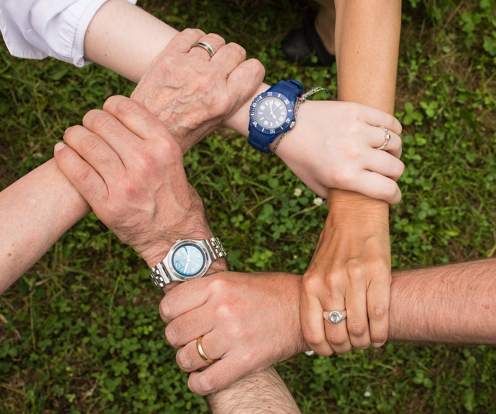
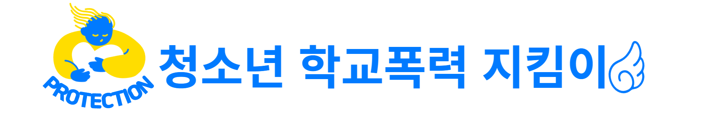

청소년 학교폭력 내부 프로그램 안내
|
- 청소년학교폭력 지킴이 상담 페이지는 학교 내에서 폭력에 직면한 학생들을 위해 제공됩니다. - 폭력을 경험하거나 폭력의 피해자가 된 학생들, 폭력을 저지른 학생들, 폭력에 관심을 가지는 학생들 등이 상담 대상입니다. - 청소년학교폭력 예방 상담안내의 목표는 학생들이 폭력 상황에서 스스로를 보호하고 대처할 수 있는 능력을 키우는 것입니다. - 학교 내 폭력 예방 활동에 참여하고 학교 커뮤니티의 일원으로서 상호존중과 평화로운 환경을 조성할 수 있도록 돕는 것이 목표입니다. - 이를 통해 학생들은 폭력을 식별하고 예방하는 방법에 대해 이해할 수 있습니다. |
|---|
|
폭력 예방 교육 학생들에게 폭력의 정의, 종류, 피해자와 가해자의 역할 등에 대해 알려주는 교육을 제공합니다. 폭력을 식별하고 예방하는 방법에 대해 이해하고, 보다 도움될 수 있는 교육을 제공하고자 다양한 기획을 운영하고 있습니다. |
대처 전략  학생들에게 폭력 상황에서 안전하게 대처하는 방법을 가르쳐줍니다. 자기보호 기술, 갈등 조정, 타인과의 적절한 소통 방법 등을 배우면서 학생들은 폭력에 대처할 수 있는 도구를 습득할 수 있습니다. |
상담 및 지원 상담사나 교사들은 학생들이 폭력 상황에 처한 경우에 대해 상담과 지원을 제공합니다. 학생들은 자신의 어려움을 표현하고 도움을 요청할 수 있으며, 상담사는 학생들의 감정을 이해하고 필요한 지원을 제공합니다. |
|---|
